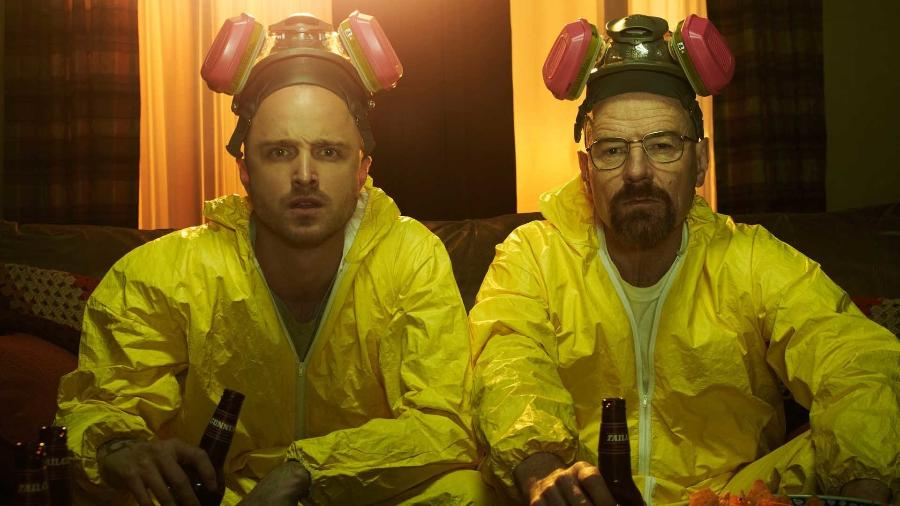

Mr Robot

O novo drama, descrito como um suspense tecnológico, segue Elliot, um jovem programador que trabalha como engenheiro de segurança cibernética durante o dia e como hacker justiceiro durante a noite. Quando o misterioso líder de um grupo hacker underground o recruta para destruir a firma que ele é pago para proteger, Elliot deve tomar a maior decisão de sua vida.
Atypical
Sam é um jovem autista de 18 anos que está em busca de sua própria independência. Nesta jornada, repleta de desafios, mas que rende algumas risadas, ele e sua família aprendem a lidar com as dificuldades da vida e descobrem que o significado de "ser um pessoa normal" não é tão óbvio assim.
Breaking Bad
Walter White é um professor de química na casa dos 50 anos que trabalha em uma escola secundária no Novo México. Para atender às necessidades de Skyler, sua esposa grávida, e Walt Junior, seu filho deficiente físico, ele tem que trabalhar duplamente. Sua vida fica ainda mais complicada quando descobre que está sofrendo de um câncer de pulmão incurável. Para aumentar rapidamente a quantidade de dinheiro que deixaria para sua família após sua morte, Walter usa seu conhecimento de química para fazer e vender metanfetamina, uma droga sintética.
Sex Education

Otis é um adolescente socialmente inapto que vive com sua mãe, uma terapista sexual. Apesar de não ter perdido a virgindade ainda, ele é uma espécie de especialista em sexo. Junto com Maeve, uma colega de classe rebelde, ele resolve montar sua própria clínica de saúde sexual para ajudar outros estudantes da escola.
Black Mirror

Retrata a inquietação coletiva em relação ao mundo moderno. Com muito suspense e genialidade, cada história explora temas relacionados à paranoia tecnológica contemporânea. A tecnologia transformou todos os aspectos de nossa vida: em todas as casas, em todos os escritórios e nas mãos de todas as pessoas há uma tela de plasma, um monitor, um smartphone – um espelho negro refletindo a nossa existência no século 21.